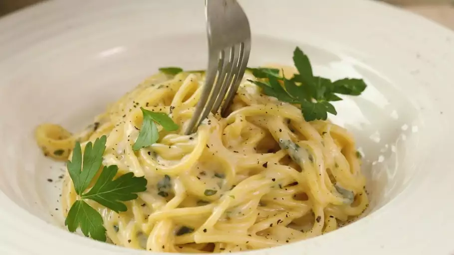

Authentic Italian Pasta

This "authentic" italian recipe for creamy, easy to make garlic pasta has been passed
down for generations. With a total time of 30 minutes, and only 10 minutes of
prep work, it's a simple weekday meal the kids can enjoy.
Ingredients
- 2 teaspoons olive oil
- 4 garlic cloves, minced
- 2 tablespoons butter
- 3 cups chicken broth, or more as needed
- 1/2 teaspooon ground black pepper
- 1/4 teaspoon salt
- 1/2 pound spaghetti
- 1 cup grated Parmesan cheese
- 3/4 cup heavy cream
- 1 1/2 tablespoons dried parsley
Steps
- Heat olive oil in a medium pan over medium heat. Add garlic and stir until fragrant, 1 to 2 minutes.
Add butter and stir constantly until melted. Pour in 3 cups chicken broth; add pepper and salt. Bring to a boil.
- Add spaghetti and cook, stirring occasionally, until tender yet firm to the bite, about 12 minutes. Add more chicken broth if pasta starts to stick to the pan.
- Add Parmesan cheese, cream, and parsley and mix until thoroughly combined. Serve immediately.